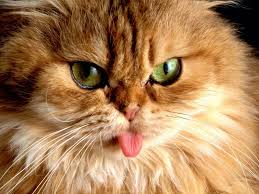
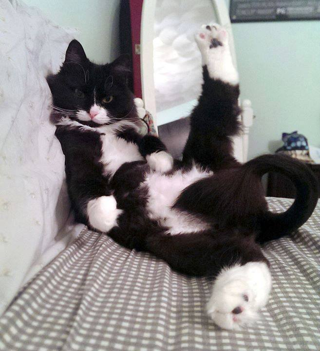
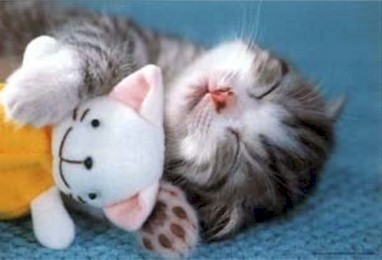
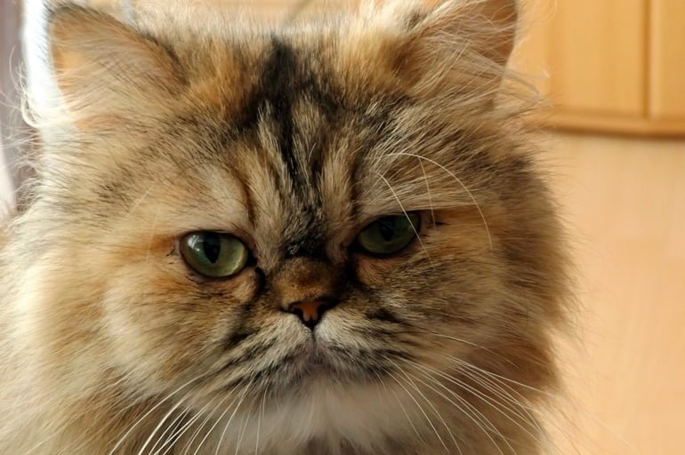

Beneficios de tener un gato
Si has decidido adoptar o comprar un gato, tienes que tener en cuenta muchas cosas. aquí encontrarás consejos y sugerencias para tener un nuevo gato.

No hay duda de ello, los gatos son grandes mascotas. Después de todo, ¿qué hay mejor que volver a casa al final de un duro día y escuchar el ronroneo de satisfacción de una adorable bola de pelo?
Los estudios demuestran que las personas con animales de compañía suelen estar más sanas y felices que aquellas que no los tienen, pero recuerda que tener un gato es una gran responsabilidad y un compromiso de por vida. Cuando estés listo para asumir este compromiso, comprobarás que tener un gato ofrece ventajas como las siguientes:
Tener un gato es muy beneficioso, pero es importante elegirlo detenidamente para estar seguro de que te adaptarás bien a tu esponjoso amigo. Tu gato ideal dependerá de tu estilo de vida y de tus preferencias personales. Por ejemplo, es posible que quieras un gato adulto al que poder acariciar en tu regazo o que tengas en mente un gatito de una raza especial.
¿Qué raza debo elegir?
Gatos con pedigrí
Hay alrededor de 60 razas y colores diferentes de gatos con pedigrí reconocidas, es decir, tienes mucho donde elegir al comprar un gato. Los gatos con pedigrí se dividen en siete tipos:
Es importante recordar que, desafortunadamente, a veces puede existir consanguinidad, lo que significa que los gatos con pedigrí son más vulnerables a las enfermedades o problemas de comportamiento heredados genéticamente. Debes tener en cuenta estas cuestiones y otras características de la raza cuando decidas tener un gato.
Razas Felina Mixtas
También conocidos como “gatos comunes”, estos gatos no tienen antepasados con pedigrí. Normalmente, se clasifican como "domésticos de pelo corto" o "domésticos de pelo largo”.
Por lo general, a menudo los gatos comunes tienen mejor salud que los gatos con pedigrí, ya que disponen de un mayor acervo genético y presentan menos problemas genéticos inherentes.
También pueden tener una personalidad felina más completa y equilibrada. En definitiva, los gatos y gatitos comunes suelen ser más baratos y más fáciles de encontrar.
¿Debería elegir un gato adulto o un gatito?
gatitos
A la hora de tener un gato resultará difícil resistirse al encanto de un gatito. Son esponjosos, juguetones y ofrecen la oportunidad de educarlos a tu gusto desde el principio. Al mismo tiempo, exigen mucha atención y tendrás que estar alerta, ¡sobre todo cuando sientan sed de aventuras! ¿Estás preparado para invertir el tiempo y la energía necesarios para atender las necesidades de un gatito? Si estás pensando en tener un gatito, tendrás que tener todo esto en cuenta.
busca un gatito que responda de un modo positivo (¡pero no agresivo!) a tus caricias o tu voz. Tener un gato que te muerda y arañe las manos repetidamente es arriesgarse a que prefiera juegos demasiados bruscos cuando crezca.
Al elegir un gatito, asegúrate de que tenga un aspecto saludable. Sus ojos deben ser brillantes y limpios; sus orejas, limpias de cera; sus uñas, lisas; y su pelaje, brillante y espeso (según la raza). Es recomendarble que sea examinado por un veterinario para comprobar su buen estado de salud.
Si ya tienes al menos un gato, elegir un gatito puede causar menos conflictos sociales que la elección de otro gato adulto. Si aún no tienes gato, pero esperas tener varios en el futuro, tener uno o dos gatitos significaría que crecerían juntos y, por lo tanto,
¡se llevarían bien!.
Adultos
Los gatos adultos pueden ser también juguetones y muy cariñosos, pero hay que tener en cuenta que pueden padecer problemas emocionales, sobre todo si han tenido un difícil comienzo. Cuando lleguen a ti, su personalidad estará ya formada por completo. Intenta conseguir información previa a través del dueño del gato o del refugio para saber qué esperar y cómo ayudarle a adaptarse (hábitos con respecto a la caja de arena, preferencias alimenticias y personalidad).
Los problemas como la micción inadecuada o la agresión, especialmente a otros gatos, son menos probables en gatos adultos ya formados. Los gatos mayores también son buenos compañeros de mimos, ya que tienen menos energía que un gatito y estarán encantados de dormirse en tu regazo.
Si estás pensando en darle un nuevo hogar a un gato de un refugio, encontrarás más información en nuestra guía sobre adoptar un gato.
Siguenos en redes sociales